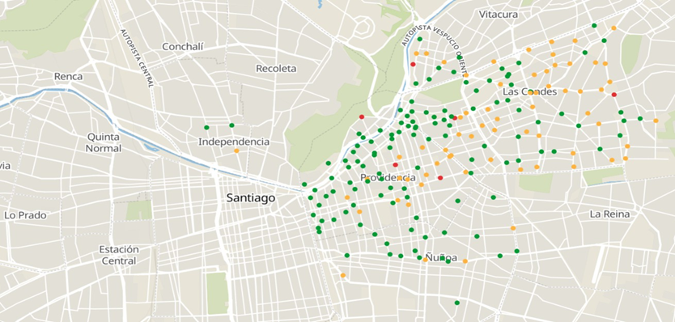
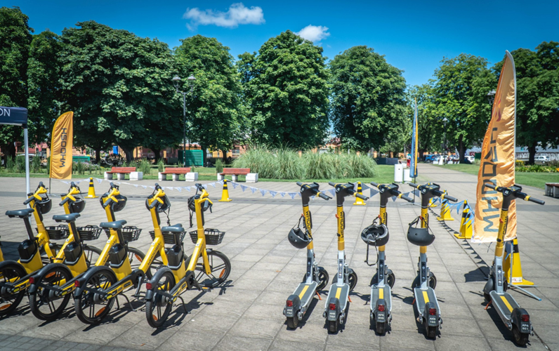

No dejemos morir la micromovilidad compartida
Columna originalmente publicada en el Newsletter de SOCHITRAN
por Pablo González Aguilera, estudiante de Magíster en Ciencias de la Ingeniería mención Transporte, Universidad de Chile
Hace algunas semanas, fue noticia la abrupta salida de operación de más de 150 estaciones de bicicletas compartidas en la ciudad de Bogotá (Infobae, 2025). Exactamente lo mismo pasó a inicios de año en Santiago, donde -de un día para otro- fueron retiradas todas las estaciones de la zona centro de la ciudad (que era donde más se ocupaban) (Mix et al., 2022; The Clinic, 2025). Ahora, muchas ex-estaciones figuran como simples estacionamientos, devolviendo al automóvil espacios que en algún momento fueron pilar y símbolo de la micromovilidad activa. Esta situación recién fue noticia tres semanas después, cuando con Ricardo Hurtubia y Bastian Henriquez publicamos una columna en La Tercera comentando al respecto (Henríquez & Hurtubia, 2025).
No podemos quedarnos de brazos cruzados viendo como de la noche a la mañana se pierde un sistema de transporte público activo y sustentable completo solamente porque no le renta (o porque operacionalmente o por temas de gobernanza ya no le resulta factible) a un privado. Si lo mismo llegara a pasar con sistemas de transporte público mayor, sería noticia en los diarios y la televisión. Habría gente protestando porque le quitaron su modo de movilización. ¿Por qué no usamos esa misma vara para hablar de la micromovilidad? Distribución actual de estaciones.

Resulta desconcertante ver la falta de congruencia y unidad que mostramos como país en el marco de implementación de este tipo de sistemas. Basta contrastar los casos de Santiago Centro, o Concepción (Canal 9 Bío Bío, 2025) con lo que está pasando en otras localidades del país como Las Condes o Temuco (Forbes Chile, 2024; Municipalidad de Temuco, 2024): mientras en los primeros casos, este tipo de iniciativas sufre de abandono y estigmatización (principalmente relacionada al vandalismo o “desorden”), en los dos últimos, estos esquemas compartidos han llegado a ser un aporte a la comunidad, permitiendo que personas que nunca habían considerado la opción de irse en bicicleta o scooter a sus empleos, ahora lo vean como algo atractivo e incluso conveniente.

Dado lo anterior, es natural preguntarse: ¿qué pasaría si existieran estándares mínimos o guías de implementación de este tipo de sistemas? ¿cómo cambiaría la demanda de viajes si, en vez de tener una ciudad con múltiples sistemas (que por lo demás, quedan a merced de las municipalidades y autoridades locales de turno), existiera un sólo sistema integrado, con infraestructura ciclista de calidad y conectada?
En Chile, la Estrategia Nacional de Movilidad Sostenible (Ministerio de Transportes y Telecomunicaciones, 2022) considera la creación de incentivos para la implementación de sistemas públicos de bicicletas y menciona la exploración de subsidios e integración tarifaria con transporte público. ¿Qué ha pasado con esto? Preocupa ver que, a pesar de los lineamientos de política pública planteados hace ya unos años (que por lo demás hemos podido cumplir de manera sobresaliente en otras áreas como electromovilidad en buses), haya un abandono tan grande y falta de cohesión cuando se habla de micromovilidad compartida.
Tenemos que dejar de ver la micromovilidad compartida como algo que está en “decadencia” y empezar a verla como lo que realmente es: una oportunidad de atraer a nuevas personas a medios de transporte más sustentables, de llenar vacíos o incidencias en sistemas de transporte público mayor mediante intermodalidad y de, en definitiva, darle mayor cohesión y equidad social a la ciudad (Yang et al., 2018; Hurtubia et al., 2021; Tiznado-Aitken et al., 2021; Saltykova et al., 2022; Kosmidis & and Müller-Eie, 2024).
Espero y tengo fe de que tanto en Bogotá como en Santiago (y en Chile entero) no dejemos de lado esto, y que desde el estado (junto a las municipalidades y Gobiernos Regionales) se incentiven iniciativas de colaboración público-privada atractivas, integradas y sostenibles en el tiempo que permitan hacer florecer de manera armoniosa este tipo de sistemas de movilidad activa.
Referencias
Canal 9 Bío Bío. (2025, marzo 13). Problemas de convivencia vial: Municipio evaluará continuidad del servicio de scooters en Concepción. Canal 9 Bío Bío. https://www.canal9cl/episodios/noticias/2025/03/13/problemas-de-convivencia-vial-municipio-evaluara-continuidad-del-servicio-de-scooters-en-concepcion
Forbes Chile. (2024, mayo 29). ¿Qué comuna de Santiago es más bike-friendly? Forbes Chile. https://forbes.cl/life/2024-05-29/que-comuna-de-santiago-es-mas-bike-friendly/
Henríquez, B., & Hurtubia, R. (2025, marzo 29). Columna de Bastián Henríquez y Ricardo Hurtubia: La silenciosa salida de las bicicletas naranjas. La Tercera. https://www.latercera.com/la-tercera-sabado/noticia/columna-de-bastian-henriquez-y-ricardo-hurtubia-la- silenciosa-salida-de-las-bicicletas-naranjas/
Hurtubia, R., Mora, R., & Moreno, F. (2021). The role of bike sharing stations in the perception of public spaces: A stated preferences analysis. Landscape and Urban Planning, 214, 104174. https://doi.org/10.1016/j.landurbplan.2021.104174
Infobae. (2025, agosto 26). Sistema de bicicletas compartidas de Bogotá se acabaría por falta de recursos: “Tembici quebró y no por vandalismo, sino por mala gestión”. infobae.https://www.infobae.com/colombia/2025/08/26/sistema-de-bicicletas-compartidas-de-bogota-se-acabaria-por-falta-de-recursos-tembici-quebro-y-no-por-vandalismo-sino-por-mala-gestion/
Kosmidis, I., & and Müller-Eie, D. (2024). The synergy of bicycles and public transport: A systematic literature review. Transport Reviews, 44(1), 34-68. https://doi.org/10.1080/01441647.2023.2222911
Ministerio de Transportes y Telecomunicaciones. (2022, noviembre). Estrategia Nacional de Movilidad Sostenible (ENMS).https://www.subtrans.gob.cl/wp-content/uploads/2022/11/Documento-oficial-ENMS-2023-SECTRA.pdf Mix, R., Hurtubia, R., &
Raveau, S. (2022). Optimal location of bike-sharing stations: A built environment and accessibility approach. Transportation Research Part A: Policy and Practice, 160, 126-142. https://doi.org/10.1016/j.tra.2022.03.022
Municipalidad de Temuco. (2024, octubre 15). Empresa Whoosh presenta nuevas bicicletas eléctricas para Temuco – Municipalidad de Temuco. https://www.temuco.cl/empresa-whoosh-presenta-nuevas-bicicletas-electricas-para-temuco/
Saltykova, K., Ma, X., Yao, L., & Kong, H. (2022). Environmental impact assessment of bike-sharing considering the modal shift from public transit. Transportation Research Part D: Transport and Environment, 105, 103238. https://doi.org/10.1016/j.trd.2022.103238
The Clinic. (2025, marzo 28). Bike Itaú no sigue en Santiago: Usuarios reclaman por el retiro de todos los estacionamientos de las bicicletas naranjas en el centro de la capital. The Clinic.
https://www.theclinic.cl/2025/03/28/bike-itau-dejara-de-operar-en-la-comuna-de-santiago/ Tiznado-Aitken, I., Fuenzalida-Izquierdo, J., Sagaris, L., & Mora, R. (2021). Using the five Ws to explore bikeshare equity in Santiago, Chile. Journal of Transport Geography, 97, 103210. https://doi.org/10.1016/j.jtrangeo.2021.103210
Yang, X.-H., Cheng, Z., Chen, G., Wang, L., Ruan, Z.-Y., & Zheng, Y.-J. (2018). The impact of a public bicycle-sharing system on urban public transport networks. Transportation Research Part A: Policy and Practice, 107, 246-256. https://doi.org/10.1016/j.tra.2017.10.017